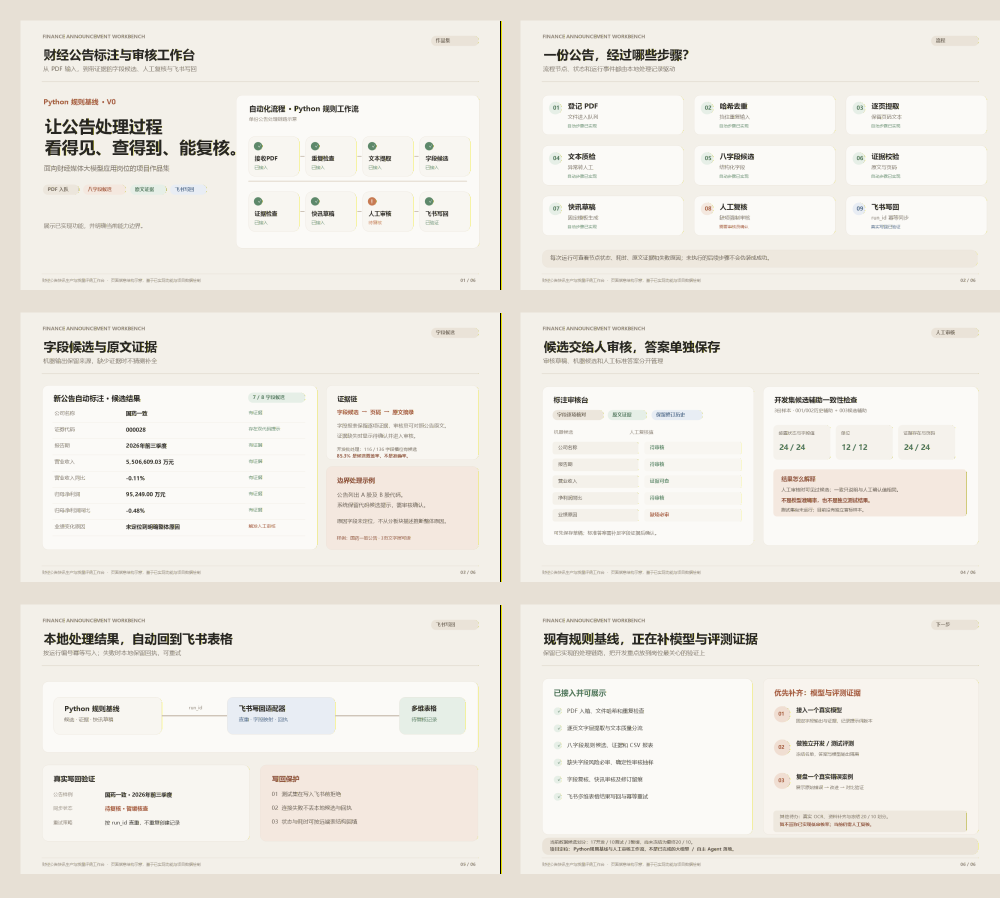

新公告运行状态飞书图表：运行状态环形图
01份运行
待审核 / 流程阻塞1
已完成评测0
状态按实际审核记录统计单 Agent · 财经公告标注与审核
一个以 Python 和飞书多维表格构建的项目工作台。它从 PDF 提取八项关键字段、保留页码证据、生成快讯草稿，再把结果交给人工审核与质量评测。
以当前已核对的清单、运行和飞书记录为准
FROM PDF TO REVIEW
点击节点查看该环节的作用。状态取自当前实现，不用虚构样例补齐进度。
核对样本是否属于开发集、校验原始 PDF 的 SHA-256，并把每次处理写入独立运行记录。测试集样本会在处理前被拒绝。
REAL RUN / NEW ANNOUNCEMENT
国药一致 2026 年前三季度业绩快报进入工作台后，规则基线提取到 8 项字段中的 7 项，并将候选、证据、快讯草稿和运行状态写入飞书。
7/8 是候选覆盖率，不是字段准确率。原因字段没有找到可引用依据，因此保留待审核状态，没有自动推断。
在飞书打开运行结果表FEISHU BASE / REPORTS
候选覆盖只代表字段有输出，不代表值正确。
! 这张展示页使用 2026-10-24 的真实项目快照绘制。点开上方链接可查看飞书原生图表；飞书页面需要当前组织账号登录。本页不会直接读取访问者的飞书账号。
EVALUATION / EVIDENCE
评测模块同时保留分母、标注方式和数据来源。机器候选覆盖、候选辅助一致性与独立测试准确率是不同指标，不混在一起展示。
查看飞书人工评分表不能称为独立准确率三份标准答案有候选辅助背景；10份测试集仍隔离，尚未运行。
规则候选、证据校验、草稿、人工审核、飞书幂等写回和状态追踪。
真实模型批次需要可用 API；每批会提示外发内容并要求确认。
OCR 路径已接入；当前电脑的 OCR 引擎环境尚未完成配置。
PORTFOLIO / PDF

6 PAGES · OPEN PDF ↗